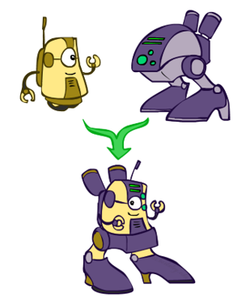

Local search Algorithms
- In many optimization problems, path is irrelevant; the goal state is the solution
- Then state space = set of “complete” configurations;find configuration satisfying constraints, e.g., n-queens problem; or, find optimal configuration, e.g., travelling salesperson problem
- Then state space = set of “complete” configurations;find configuration satisfying constraints, e.g., n-queens problem; or, find optimal configuration, e.g., travelling salesperson problem
- In such cases, can use iterative improvement algorithms: keep a single “current” state, try to improve it
- Constant space, suitable for online as well as offline search
- More or less unavoidable if the “state” is yourself (i.e., learning)
Hill Climbing
Simple, general idea:
- Start wherever
- Repeat: move to the best neighboring state
- Are pocket calculators agents?
- If no neighbors better than current, quit
Heuristic for n-queens problem
- Goal: n queens on board with no conflicts, i.e., no queen attacking another
- States: n queens on board, one per column
- Heuristic value function: number of conflicts
Hill-climbing algorithm
Try using python code
Global and local maxima

Random restarts
- find global optimum
- duh:only remember the current state
Random sideways moves
- Escape from shoulders
- Loop forever on flat local maxima
Try on 8-queens problem
Simulated annealing
Resembles the annealing process used to cool metals slowly to reach an ordered (low-energy) state
Basic idea:
- Allow “bad” moves occasionally, depending on “temperature”
- High temperature => more bad moves allowed, shake the system out of its local minimum
- Gradually reduce temperature according to some schedule
- Sounds pretty flaky, doesn’t it?
Simulated annealing algorithm
Try using python code
Simulated Annealing
Theoretical guarantee:
- Stationary distribution (Boltzmann):
- If T decreased slowly enough, will converge to optimal state!
- Let P(x), P(y) be the equilibrium occupancy probabilities at T
- Let P(x→y) be the probability that state x transitions to state y
- Assume E(y) > E(x) [and the algorithm seeks high values of E
Proof sketch (for reversible case: x→y iff y→x):
Simulated annealing and its relatives are a key workhorse in VLSI layout and other optimal configuration problems.
Local beam search
Basic idea:
- K copies of a local search algorithm, initialized randomly
- For each iteration:Generate ALL successors from K current states, Choose best K of these to be the new current states
Why is this different from K local searches in parallel?
- The searches communicate! “Come over here, the grass is greener!”
What other well-known algorithm does this remind you of?
- Evolution!
Genetic algorithms

Genetic algorithms use a natural selection metaphor
- Resample K individuals at each step (selection) weighted by fitness function
- Combine by pairwise crossover operators, plus mutation to give variety
- Does crossover make sense here?
- What would mutation be?
- What would a good fitness function be?
Example: N-Queens
Local search in continuous spaces
Handling a continuous state/action space
- Discretize it! Define a grid with increment , use any of the discrete algorithms
- Choose random perturbations to the state
- a. First-choice hill-climbing: keep trying until something improves the state
- b. Simulated annealing
- Compute gradient of f(x) analytically
summary
Many configuration and optimization problems can be formulated as local search
General families of algorithms:
- Hill-climbing, continuous optimization
- Simulated annealing (and other stochastic methods)
- Local beam search: multiple interaction searches
- Genetic algorithms: break and recombine states
Many machine learning algorithms are local searches